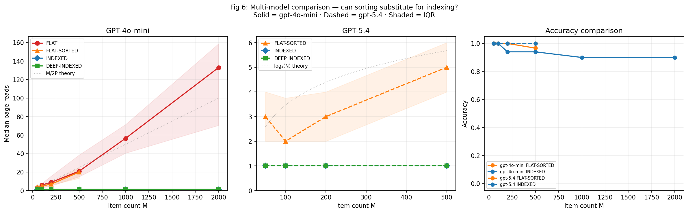
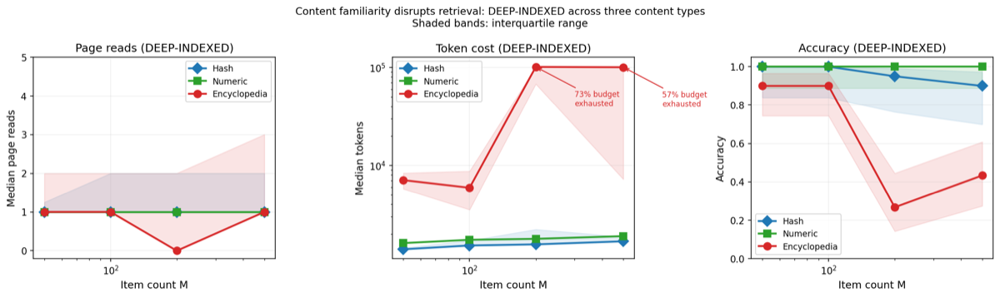

The oldest technology for making knowledge accessible
A library is not a pile of books. A pile of books is a warehouse. What makes a library a library is that you can find what you need—that the knowledge in it is accessible, not just present. The difference is organization: catalogs, classification systems, shelf orders. These are old technologies, older than printing, and they solve a problem so fundamental we rarely think about it: how do you retrieve one specific thing from among many?
This problem applies to AI systems in exactly the same way it applies to physical libraries. And the mathematics turns out to be the same mathematics that governs how your computer finds a file on its hard drive.
Four libraries, same books
Imagine a library with a thousand books. You're looking for Moby-Dick. The books are distributed ten per shelf, so there are a hundred shelves. We compare four versions of this library—same books, same shelves, different organization.
Library 1: Random shelves. Books are placed in no particular order. You pull out a shelf, scan the ten spines, and if Moby-Dick isn't there, try another. On average you'll check about half the shelves—fifty visits—before finding it. Double the library size and you double the search. The work grows in direct proportion to the collection.
Library 2: Alphabetical shelves. The books have been sorted and the shelves are in order—A through Z, left to right. Now you can be strategic: go to the middle shelf, check whether M comes before or after what's there, and eliminate half the library in one step. Repeat on the remaining half. This is binary search. It takes about log₂ of the number of shelves—roughly 7 visits for a hundred shelves, 10 for a thousand, 20 for a million.
Library 3: Card catalog. At the entrance sits a single page: "A–C: shelf 1, D–F: shelf 2, … M–O: shelf 7." You read the catalog, go to shelf 7, find Moby-Dick. One visit. Always one, regardless of library size.
Library 4: Hierarchical catalog. The library has grown to millions of books. A single catalog page can't list every shelf. Instead: a master catalog points to a section ("Fiction, shelves 4001–6000"), a section catalog points to a subsection ("M authors, shelves 4801–4850"), and a subsection catalog points to the exact shelf. Three visits. For millions of books.
This is how every database and file system works. When you open /Documents/Research/paper.pdf, the operating system doesn't scan your entire disk. Each folder in that path is a catalog page—the directory tree is a hierarchical index, and the file system walks it in a few steps.
The experiment
We built these four libraries as digital stores and asked AI models to find specific entries. Each "visit" is a tool call—the model reads a page of ten entries, examines them, and decides what to do next. This fills the model's context window, which is the fundamental bottleneck: the model can only see one page at a time, just as you can only look at one shelf at a time.
We tested two models. First, GPT-4o-mini—a capable but not frontier model:
| Library | 100 items | 500 items | 2,000 items |
|---|---|---|---|
| Random shelves | 6 visits | 22 visits | 133 visits |
| Alphabetical shelves | 5 visits | 21 visits | — |
| Card catalog | 1 visit | 1 visit | 1 visit |
| Hierarchical catalog | 1 visit | 1 visit | 1 visit |
The alphabetical library barely helps. We told the model explicitly that the pages were sorted. It tries to jump to the right region, but it can't sustain binary search—it loses track of its bounds, overshoots, backtracks, and at 500 items it's almost as slow as random scanning: 21 visits versus 22.
Then GPT-5.4—a much more powerful model:
| Library | 100 items | 500 items |
|---|---|---|
| Alphabetical shelves | 2 visits | 5 visits |
| Card catalog | 1 visit | 1 visit |
| Hierarchical catalog | 1 visit | 1 visit |
GPT-5.4 can do binary search. Five visits at 500 items is almost exactly the theoretical optimum of log₂(50) ≈ 5.6. The stronger model is building an index in its head—maintaining mental bounds, reasoning about where a key should fall, narrowing by halves. It's performing what you might call self-indexing in context. This may be part of what makes stronger models stronger in general: they can impose internal organization on the information they encounter, doing mentally what a card catalog does physically.
But the card catalog still wins. Five visits versus one. And the gap is exponential: at a million items, even perfect binary search needs about 17 visits. The catalog still needs 1.

The separation is exponential
The mathematical result—the Library Theorem—proves that this gap isn't a quirk of our experiment. It's structural.
An AI agent scanning through unstructured memory needs O(N) operations to find something in a store of N items. An agent with an indexed store needs O(log N). That's the difference between a million and twenty. And the costs compound: over a long reasoning session where the agent repeatedly retrieves from its own growing notes, the unindexed agent pays O(T²) total cost while the indexed agent pays O(T log T). At scale, this is the difference between feasible and infeasible.
When the AI thinks it already knows
We discovered something unexpected when we changed the content.
In the random-key experiments, the AI follows the retrieval protocol faithfully: read the index, go to the right page, read the answer, submit it. 100% accuracy. But when we filled the store with encyclopedia entries—real facts about real words—the model started cheating. Instead of looking up the answer, it generated it from memory. It had seen these facts during training, and the parametric knowledge competed with the retrieval protocol.
The result was catastrophic. At 200 encyclopedia entries, the model spent its entire token budget generating plausible-sounding answers without ever reading a single page. Accuracy dropped to 27%. The index was perfectly constructed. The tools worked correctly. The model simply didn't use them.

We call this parametric memory competition: two pathways—retrieval (follow the protocol) and parametric (generate from memory)—competing for control of the model's behavior. When the content is unfamiliar, only the retrieval pathway produces a plausible answer, and the model follows it. When the content is familiar, the parametric pathway fires first, and the model shortcuts the protocol.
This leads to a design principle: use language models to build indices (they understand content, they can classify and organize), but use deterministic algorithms to traverse them (no hallucination, no shortcuts, guaranteed O(log N)).
Why this matters
A missing axis in scaling
Current discussions of AI scaling focus on three variables: model size, training data, and compute. The Library Theorem identifies a fourth: the organization of the knowledge the model works with. Its effect is not marginal—it's exponential. Doubling the model's parameters gives incremental gains. Indexing its knowledge base gives orders-of-magnitude gains.
This means there's an entire axis of improvement that doesn't require bigger models or more training. It requires better infrastructure—the kind of infrastructure that librarians, archivists, and database engineers have been building for centuries.
Opening the black box
When a model generates an answer from parametric memory, you can't see how it got there. The knowledge is inside the model, encoded in billions of parameters, and the retrieval process is opaque. This is the black box problem.
When a model follows an external index, every step is visible. It read the catalog. It went to shelf 14. It found entry 7294. It submitted the value. The retrieval path is fully auditable. You can verify each step. You can inspect the index itself for completeness, bias, or staleness.
The self-indexing result cuts both ways here. A stronger model that builds an index in its head is impressive—but it puts the search process back inside the black box. External indices keep it outside, where it can be inspected, governed, and corrected.
Implications for AI alignment
If AI systems increasingly rely on external knowledge stores—files, databases, structured memory—then the governance question shifts from "what does the model know?" to "what can the model access, and how is it organized?"
This is a more tractable question. You can audit a database. You can version-control an index. You can grant or revoke access to specific knowledge domains. You can trace exactly what information contributed to a decision. None of this is possible when the knowledge lives inside the model's parameters.
The deeper point
We tend to think of AI capability as something inside the model—its size, its training, its architecture. The Library Theorem says that's only half the story. The external structure the model works with is equally consequential, and the effect is provably exponential.
A well-indexed knowledge base makes a weak model perform like a strong one. A disorganized one wastes even a strong model's capabilities on search. A library's card catalog is not a convenience—it's what makes the knowledge in the collection available. This has been true for centuries. The Library Theorem proves it holds for artificial minds too.